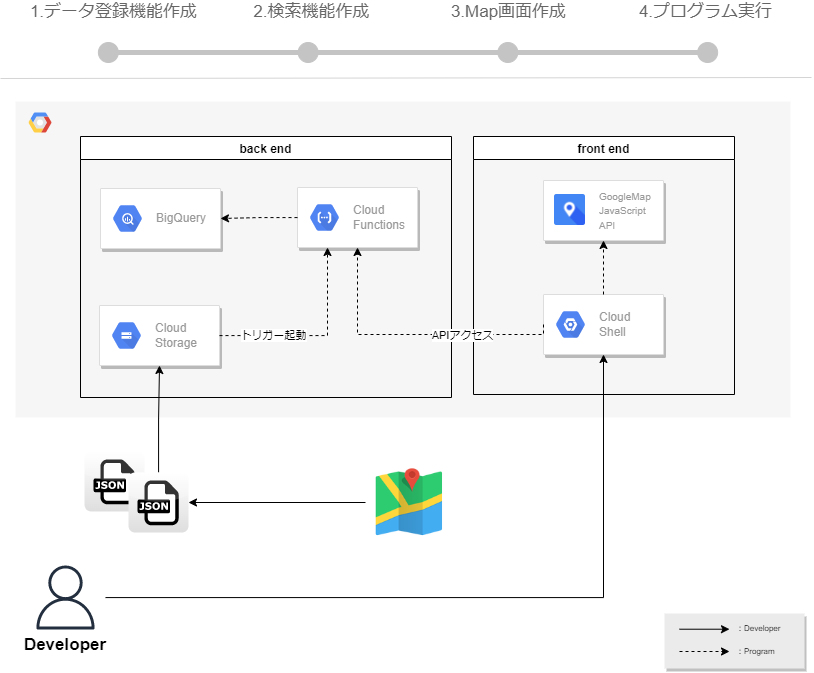

はじめに
1. 今回のゴール
BigQueryに溜め込んだデータ（住所情報）を、 GoogleMapAPIを使って画面表示します。
データの溜め込みや、画面表示をさせるために、Cloud StorageやCloud Functionsを使用していきます
今回は大きく３機能作成しますが、全てGCPコンソール上の開発で完結出来るハンズオンとなります。
PCへのインストール不要なので、ブラウザ一つで開発するハンズオンを体験頂ければ幸いです。

使用する技術要素については、以下となります。
※ページの最後に、技術要素の参考サイトを記載しています。
- フロントエンド
- TypeScript
- Node.js
- Cloud Shell Editer（開発環境兼、実行環境）
- バックエンド
- JavaScript
- Node.js
- Cloud Functions（サーバーレス）
- API
- GoogleMap JavaScript API
- BigQuery API
- Cloud Storage API
- データベース
- BigQuery
- ストレージ
- Cloud Storage
2. 事前に準備頂きたいこと
- GCPアカウントの作成
- BigQueryのデータセット作成
- Cloud Storageのバケット作成
3. 手順
全体手順としては次の流れで進めます。
0.GCPのAPI有効化
1.データ登録機能作成
2.検索機能作成
3.Map画面作成
4. 技術要素
参考サイトのリンクを記載しておきますので、参考にお使いください。
- GoogleMap JavaScript API
- WebGL Overlay (ThreeJS wrapper)のサンプルコードをベースにしています。
- BigQuery API
- Cloud Storage API
- Cloud Functions